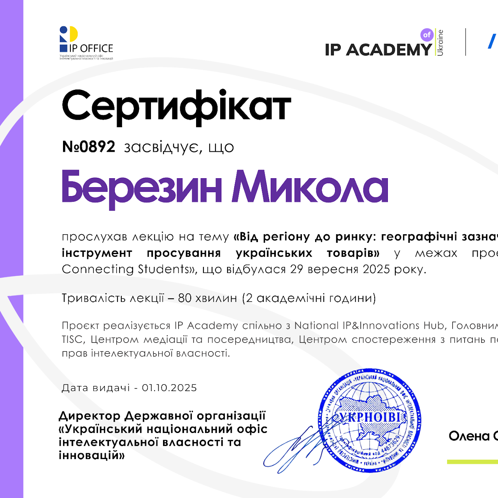
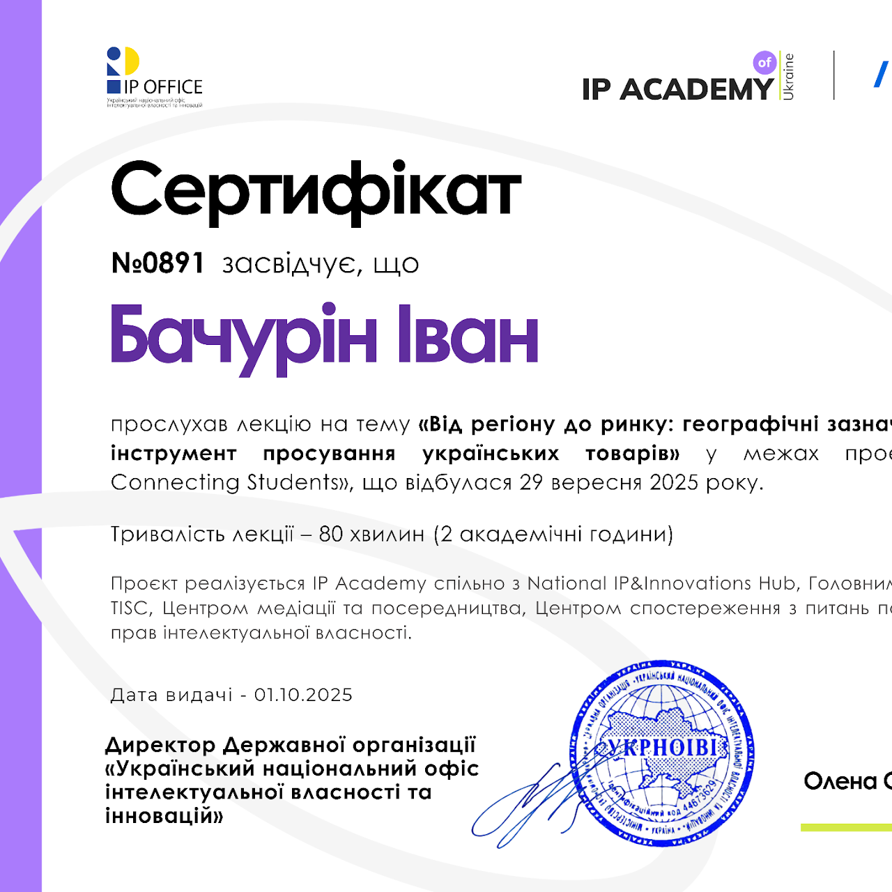
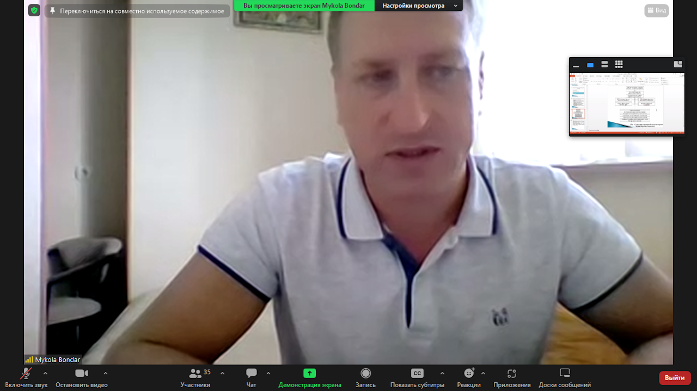
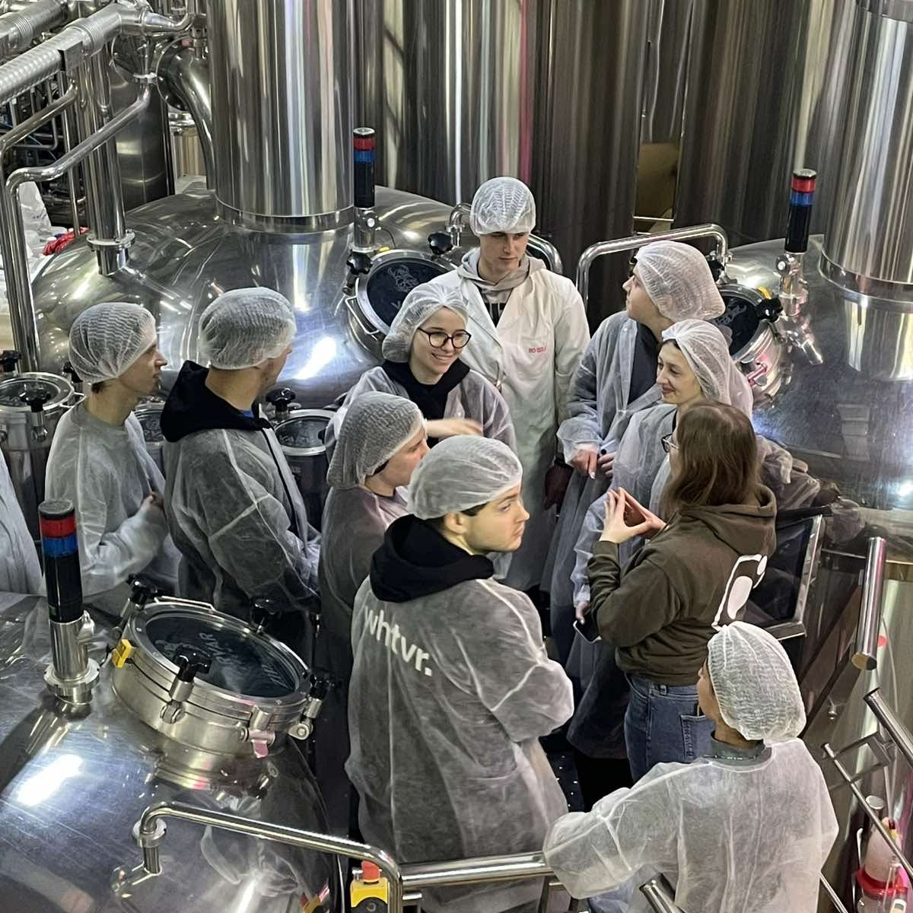

Де наука зустрічає мистецтво бродіння






Кафедра біотехнології продуктів бродіння і виноробства здійснює підготовку фахівців у галузі знань 18 «Виробництво та технології» за спеціальністю 181 «Харчові технології».
Підготовка ведеться за освітнім ступенем «бакалавр» (ОП «Харчові технології та інженерія»), освітнім ступенем «магістр» (ОП «Технології продуктів бродіння і виноробства») та освітньо-науковим ступенем «доктор філософії» (ОНП «Харчові технології») денної і заочної формами навчання.
Кафедра одна з перших в університеті започаткувала та продовжує підготовку фахівців за дуальною освітою. Щорічно за програмою Erasmus+ в університеті Гайзенхайма (Німеччина) навчаються 1–2 студенти за професійним спрямуванням «Технологія вина».
Кредо кафедри — підготовка фахівців-лідерів. Ми прагнемо розкривати та розвивати потенціал наших вихованців для здобуття компетентностей із вирішення складних задач, досягнення особистого успіху і фінансової незалежності.
Підготовку здобувачів здійснює висококваліфікований колектив: 3 професори, доктори технічних наук та 10 кандидатів технічних наук, доценти.
Кафедра проводить унікальну сертифікатну програму «Професія сомельє і науково-практичні основи дегустації вин та алкогольних напоїв».
Професійні навички здобувачі набувають під час практик на підприємствах: ЗАТ «ОБОЛОНЬ», ТОВ «Немирівський ЛГЗ NЕМІRОFF», «САН Ін Бев Україна», «Центр культури вина SHABO», АТ «Коблево», ТОВ «Микулинецький бровар», міні-пивоварня VARVAR та ін.
Наукові дослідження
Сучасні лабораторії для дослідження мікробного синтезу, ферментації та нанотехнологій у харчовій промисловості.
Практика на виробництві
Партнерство з крафтовими пивоварнями, виноробнями та виробниками ферментованих напоїв по всій Україні.
Міжнародна діяльність
Обмінні програми, міжнародні конференції та співпраця з європейськими університетами і дослідницькими центрами.
Три рівні освіти
Бакалаврат, магістратура та аспірантура — повний цикл підготовки від основ до дисертації.